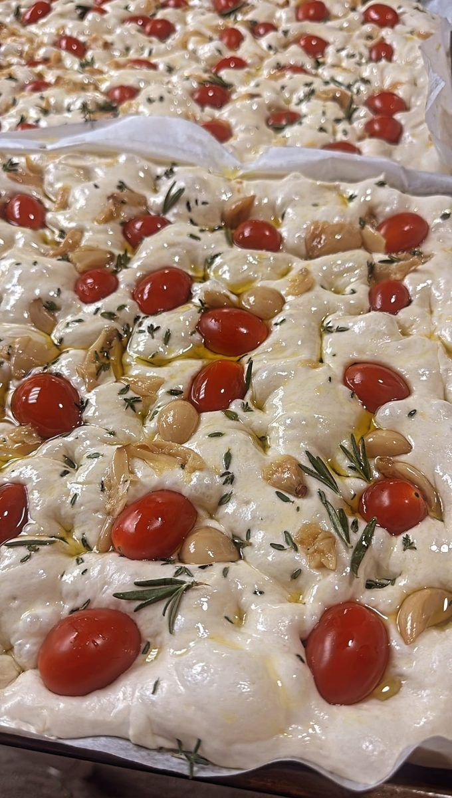

Discover
Cuisines
A portrait of world traditions — tap a cuisine for courses, tasting notes, and photography.
Gatherings
Services & Occasions
Corporate milestones, private lessons, family tables, and intimate celebrations — open any card for planning notes, sample flow, and a full image strip.

The Siler Craft
From long fermentation to small-batch churning
Every culinary experience is elevated by artisanal preparation. We use professional-grade stone-milling and kneading for signature breads, alongside small-batch churning for fresh sorbets and gelatos, so each course lands at its best texture and flavor.
At Siler Chef, true luxury lives in the details. Every element is hand-crafted from scratch, from long-fermented breads to freshly spun frozen desserts, honoring traditional technique while delivering a polished private-dining experience at home.
Atmosphere
Moments from the pass
Light, texture, and finish — a rotating glimpse across cuisines and gatherings (no two events styled the same).
Curated photos
Still frames show tone and plating language. For playable reels, open the Video gallery or the full archive.
Private dining snapshot
Six cuisines · six occasions · one chef-led table
A quick scope of what we build toward — then your brief shapes every course, cue, and finishing touch.
6
Cuisine portfolios
6
Occasion archetypes
1
Chef-led experience
Hold your night on the calendar
Choose a date, guest count, and occasion notes — your request lands in the reservation desk for follow-up by phone, email, or WhatsApp.
- Thoughtful reply timing — most hosts hear back within the same week
- Menus adapted around allergies, preferences, and the tone of your evening
- Reno · Lake Tahoe · Bay Area — travel assessed for qualified events
Questions clients already ask
Private chef FAQs for Reno, Lake Tahoe, and the Bay Area
Clear answers for searchers comparing private-chef options, planning a reservation, or deciding what to send before the first call.
Service area
What areas does Siler Chef serve?
Siler Chef serves Reno, Lake Tahoe, and the San Francisco Bay Area, with travel considered for qualified private events and chef-led occasions.
Reservation flow
How do reservation requests work?
Guests send their event date, guest count, event location, preferred cuisine, and any dietary notes. The request goes into the private reservation dashboard, and follow-up happens by phone or email.
Menus
Can the sample menus be customized?
Yes. Every cuisine and sample menu is only a starting direction. Courses can be adjusted or redesigned from scratch around the host brief, guest list, and dietary needs.
Booking details
What information should guests send when booking?
The most useful details are the date, guest count, event location, preferred cuisine, allergy or intolerance notes, and the best phone number for follow-up.
Dietary needs
Can the menu accommodate dietary restrictions?
Yes. The planning flow is built to capture allergies, food preferences, and lifestyle requirements early so the menu direction and sourcing can be shaped around them.
Chef education
Does Siler Chef offer private lessons?
Yes. Private lessons and chef education sessions can be prepared for small groups, hosts who want a more interactive night, or clients who want a guided culinary workshop.
Contact
Chef Siler · Reno, Nevada — serving Reno, Lake Tahoe, and the Bay Area.
Reno, Nevada, USA